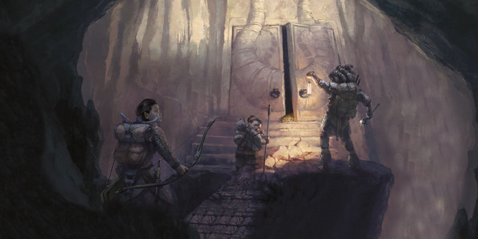

Dons
Initié des artificiers
Vous avez appris une partie de l'ingéniosité d'un artificier, et bénéficiez des avantages suivants :
- Vous apprenez un sort mineur de votre choix dans la liste de sorts d'artificier, et vous apprenez un sort de niveau 1 de votre choix de cette liste. L'intelligence est votre caractéristique d'incantation pour ces sorts. Chaque fois que vous gagnez un niveau, vous pouvez remplacer l'un de ces sorts par un autre sort du même niveau dans la liste de sorts d'artificier.
- Vous pouvez lancer le sort de niveau 1 de ce don sans emplacement de sort, et vous devez terminer un repos long avant de pouvoir le lancer à nouveau de cette façon. Vous pouvez également lancer le sort en utilisant un emplacement de sort disponible.
- Vous obtenez la maîtrise d'un type d'outil d'artisan de votre choix, et vous pouvez utiliser ce type d'outil comme focaliseur de sorts pour tout sort que vous lancez qui utilise l'Intelligence comme caractéristique d'incantation.
Chef
Votre temps et vos efforts consacrés à la maîtrise des arts culinaires ont porté leurs fruits. Vous gagnez les avantages suivants :
- Augmentez votre valeur de Constitution ou de Sagesse de 1, pour un maximum de 20.
- Vous obtenez la maîtrise des ustensiles de cuisinier si vous ne l'avez pas déjà.
- Dans le cadre d'un repos court, vous pouvez cuisiner des plats spéciaux, à condition d'avoir des ingrédients et des ustensiles de cuisine à portée de main. Vous pouvez préparer suffisamment de cette nourriture pour un nombre de créatures égal à 4 + votre bonus de maîtrise. À la fin du repos court, toute créature qui mange cette nourriture et dépense un ou plusieurs dés de vie pour regagner des points de vie récupère 1d8 points de vie supplémentaires.
-
Avec une heure de travail ou lorsque vous terminez un repos long, vous pouvez cuisiner un nombre de friandises égal à votre bonus de maîtrise. Ces friandises spéciales durent 8 heures après avoir été confectionnées. Une créature peut utiliser une action bonus pour manger une de ces friandises et gagner des points de vie temporaires égaux à votre bonus de maîtrise.
Broyeur
Vous vous êtes entraîné dans l'art d'écraser vos ennemis, et bénéficiez des avantages suivants :
- Augmentez votre valeur de Force ou de Dextérité de 1, pour un maximum de 20.
- Une fois par tour, si vous touchez une créature avec une attaque qui inflige des dégâts contondants, vous pouvez la déplacer de 1,50 mètre dans un espace inoccupé, à condition que la cible ne fasse pas plus d'une taille que vous.
-
Lorsque vous réalisez un coup critique qui inflige des dégâts contondants à une créature, les jets d'attaque contre cette créature ont un avantage jusqu'à la fin de votre prochain tour.
Adepte occulte
Prérequis : capacité Incantation ou Magie de pacte
En étudiant les traditions occultes, vous avez libéré la puissance occulte qui dormait en vous. Vous apprenez une option de Manisfestation occulte de votre choix de la classe d'occultiste. Si la manifestation a une condition, vous pouvez la choisir seulement si vous êtes un occultiste et si vous remplissez cette condition. Chaque fois que vous gagnez un niveau, vous pouvez remplacer la manifestation par une autre de la classe d'occultiste.
Touché par les fées
Votre exposition à la Féerie ou à l'un de ses habitants vous a laissé une marque magique. Vous gagnez les avantages suivants :
- Augmentez votre valeur d'Intelligence, de Sagesse ou de Charisme de 1, pour un maximum de 20.
- Vous apprenez le sort foulée brumeuse et un sort de niveau 1 de votre choix. Le sort de niveau 1 doit provenir de l'école de magie de divination ou d'enchantement. Vous pouvez lancer chacun de ces sorts sans utiliser d'emplacement de sort. Une fois que vous avez lancé l'un de ces sorts de cette manière, vous ne pouvez plus le lancer de cette manière avant d'avoir terminé un repos long. Vous pouvez également lancer ces sorts en utilisant des emplacements de sorts du niveau approprié. La caractéristique d'incantation de cette capacité est la caractéristique augmentée par ce don.
Initié au combat
Prérequis : Maîtrise d'une arme de guerre
Votre entraînement martial vous a aidé à développer un style de combat particulier. En conséquence, vous apprenez une option de Style de combat de votre choix de la classe de guerrier. Si vous avez déjà un style, celui que vous choisissez doit être différent. Chaque fois que vous gagnez un niveau, vous pouvez remplacer le style de combat de ce don par un autre style de la classe de guerre que vous n'avez pas.
Amateur d'armes à feu
Vous avez le geste rapide et l'œil vif lorsque vous utilisez des armes à feu, et vous bénéficiez des avantages suivants :
- Augmentez votre valeur de Dextérité de 1, pour un maximum de 20.
- Vous obtenez la maîtrise des armes à feu (voir « Armes à feu » dans le DMG).
- Vous ignorez la propriété chargement des armes à feu.
- Être à 1,50 mètre ou moins d'une créature hostile n'impose pas de désavantage à vos jets d'attaque à distance.
Adepte de la métamagie
Prérequis : capacité Incantation ou Magie de pacte
Vous avez appris à exercer votre volonté sur vos sorts pour modifier leur fonctionnement. Vous gagnez les avantages suivants :
- Vous apprenez deux options de métamagie de votre choix de la classe d'ensorceleur. Vous ne pouvez utiliser qu'une seule option de métamagie sur un sort lorsque vous le lancez, sauf si l'option dit le contraire. Chaque fois que vous gagnez un niveau, vous pouvez remplacer l'une de vos options de métamagie par une autre de la classe d'ensorceleur.
- Vous gagnez 2 points de sorcellerie à dépenser en métamagie (ces points sont ajoutés à tous les autres points de sorcellerie obtenus d'une autre source mais ne peuvent être utilisés que pour de la métamagie). Vous regagnez tous les points de sorcellerie dépensés lorsque vous terminez un repos long.
Empaleur
Vous avez atteint une précision impressionnante en combat, et bénéficiez des avantages suivants :
- Augmentez votre valeur de Force ou de Dextérité de 1, pour un maximum de 20.
- Une fois par tour, si vous touchez une créature avec une attaque qui inflige des dégâts perforants, vous pouvez relancer l'un des dés de dégâts de l'attaque mais devez forcément utiliser le nouveau résultat.
-
Lorsque vous réalisez un coup critique qui inflige des dégâts perforants à une créature, vous pouvez lancer un dé de dégâts supplémentaires pour déterminer les dégâts perforants supplémentaires que subit la cible.
Empoisonneur
Vous pouvez préparer des poisons mortels, et bénéficiez des avantages suivants :
- Lorsque vous lancer des dés de dégâts, vous ignorez la résistance aux dégâts de poison.
- Vous pouvez enduire une arme de poison par une action bonus au lieu d'une action.
- Vous obtenez la maîtrise du kit d'empoisonneur si vous ne l'avez pas déjà. Après une heure de travail en utilisant un kit d'empoisonneur et en dépensant 50 po de matériaux, vous pouvez créer un nombre de doses d'un puissant poison égal à votre bonus de maîtrise. Une fois appliqué, le poison conserve sa puissance pendant 1 minute ou jusqu'à ce que vous touchiez avec l'arme. Lorsqu'une arme recouverte de ce poison inflige des blessures à une créature, celle-ci doit réussir un jet de sauvegarde de Constitution DD 14 ou subir 2d8 points de dégâts et devenir empoisonnée jusqu'à la fin de votre prochain tour.
Maître praticien
Vous avez perfectionné votre maîtrise d'une compétence ou d'un outil particulier, et bénéficiez des avantages suivants :
- Augmentez la valeur d'une caractéristique de votre choix de 1, pour un maximum de 20.
- Vous obtenez la maîtrise d'une compétence ou d'un outil de votre choix.
- Choisissez une compétence ou un outil que vous maîtrisez. Votre bonus de compétence est doublé pour tout jet de caractéristique que vous effectuez et qui utilise la maîtrise choisie.
Touché par les ombres
Vous avez appris à faire plier les ombres à partir de votre expérience avec la Gisombre. Vous gagnez les avantages suivants :
- Augmentez votre valeur d'Intelligence, de Sagesse ou de Charisme de 1, pour un maximum de 20.
- Vous apprenez le sort ténèbres et un sort de niveau 1 de votre choix. Le sort de niveau 1 doit provenir de l'école de magie d'illusion ou de nécromancie. Vous pouvez lancer chacun de ces sorts sans utiliser d'emplacement de sort. Une fois que vous avez lancé l'un de ces sorts de cette manière, vous ne pouvez plus le lancer de cette manière avant d'avoir terminé un repos long. Vous pouvez également lancer ces sorts en utilisant des emplacements de sorts du niveau approprié. La caractéristique d'incantation de cette capacité est la caractéristique augmentée par ce don.
Entraîné aux boucliers
Vous avez été formé à utiliser efficacement des boucliers. Vous gagnez les avantages suivants :
- Augmentez votre valeur de Force, de Dextérité ou de Constitution de 1, pour un maximum de 20.
- Vous obtenez la maîtrise des boucliers.
- En combat, vous pouvez enfiler ou retirer un bouclier par une interaction libre avec un objet à votre tour.
-
Si vous avez la capacité Incantation ou Pacte de magie, vous pouvez utiliser un bouclier comme focaliseur de sorts.
Pourfendeur
Vous avez appris où trancher pour obtenir les meilleurs résultats, et bénéficiez des avantages suivants :
- Augmentez votre valeur de Force ou de Dextérité de 1, pour un maximum de 20.
- Une fois par tour, si vous touchez une créature avec une attaque qui inflige des dégâts tranchants, vous pouvez réduire la vitesse de la cible de 3 mètres jusqu'au début de votre prochain tour.
-
Lorsque vous réalisez un coup critique qui inflige des dégâts tranchants à une créature, vous la blessez gravement. Jusqu'au début de votre prochain tour, la cible a un désavantage à tous les jets d'attaque.
Tacticien en duo
Votre présence dans une rixe a tendance à animer vos camarades. Vous gagnez les avantages suivants :
- Vous pouvez utiliser l'action Aider en tant qu'action bonus.
- Lorsque vous utilisez l'action Aider pour aider un allié à attaquer une créature, augmentez la portée de l'action Aider de 3 mètres. De plus, vous pouvez aider deux alliés qui ciblent la même créature à portée lorsque vous utilisez l'action Aider de cette façon.
Pisteur
Vous avez passé du temps à chasser des créatures et à perfectionner vos compétences, et bénéficiez des avantages suivants :
- Augmentez votre valeur de Sagesse de 1, pour un maximum de 20.
- Vous apprenez le sort marque du chasseur. Vous pouvez le lancer une fois sans dépenser d'emplacement de sort, et vous devez terminer un repos long avant de pouvoir le lancer de nouveau de cette façon. Vous pouvez également lancer le sort en utilisant un emplacement de sort du niveau approprié. La Sagesse est votre caractéristique d'incantation pour ce sort.
- Vous avez un avantage aux jets de Sagesse (Survie) pour pister des créatures.

Écrit par Taymoor Rehman, Jeremy Crawford, Ben Petrisor, Dan Dillon, Ari Levitch, traduit par blueace